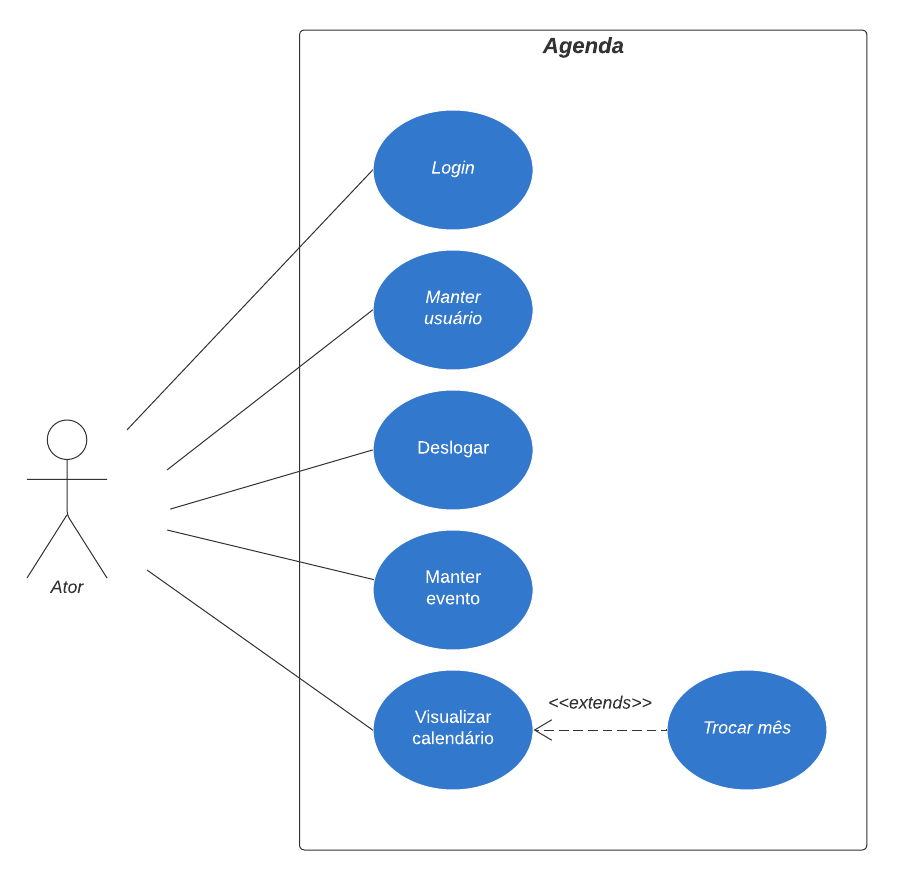
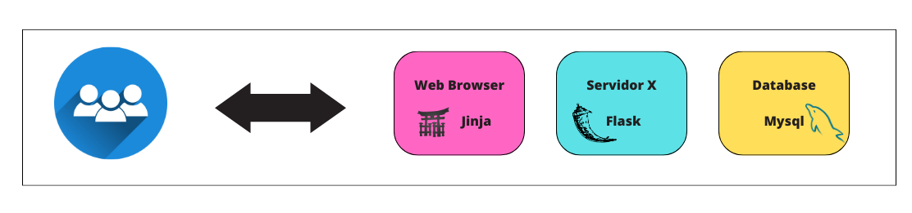

Sistema de Agenda
Introdução
O sistema de agenda, tem o objetivo de auxiliar o usuário a gerenciar seus compromissos de maneira simples e eficiente, com esse sistema será possível inserir os dados do usuário para que ele mantenha uma segurança de suas informações através de um login e do cadastro, ao acessar a agenda propriamente dita, será mostrado um calendário em que o usuário poderá navegar pelos dias e meses e selecionar a data que deseja cadastrar seus eventos podendo editar e excluí-los, além de poder se deslogar do aplicativo para acessar ou cadastrar outra conta.
Requisitos
Os requisitos são os comportamentos ou propriedades que a agenda deverá atender. Eles mostram o que será necessário no projeto, ou seja, foca nos objetivos que o projeto possui. Diante disso, listamos os requisitos funcionais e não funcionais e os casos de que vão compor o sistema.
Requisitos Funcionais
Os requisitos funcionais definem como o sistema se comporta e o que ele faz para atender as necessidades dos usuários. Listamos os requisitos funcionais utilizados no sistema de agenda:
- Login
- Cadastro
- Visualizar calendário
- Trocar mês
- Criar evento
- Visualizar evento
- Editar evento
- Excluir evento
- Editar dados do usuário
- Logout
Requisitos não funcionais
Os requisitos não funcionais definem a qualidade do sistema, esses requisitos estão associados a usabilidade, desempenho, segurança do aplicativo. Listamos os requisitos não funcionais utilizados no sistema de agenda:
Diagrama de casos de uso
O diagrama de casos de uso, documenta as principais funcionalidades do sistema e como elas interagem com o usuário do mesmo sistema.
System Metaphor
O System Metaphor se propõe a explicar quais os tipos de tecnologia que estão sendo utilizadas no desenvolvimento do sistema, no caso da agenda, utilizamos HTML , CSS e JavaScript para o frontend, no backend utilizamos o Flask e como SGBD utilizamos o MySQL.
Diagrama de Fluxo de telas
Esse diagrama de fluxo de telas tem por objetivo, mostrar como os usuários terão que percorrer pelas telas do aplicativo. É o caminho pelo qual deve-se traçar
para conseguir utilizar todas as funcionalidades que a agenda tem a oferecer.

Análise & Projeto
Diagrama Entidade Relacionamento
O diagrama entidade relacionamento exemplifica de maneira visual uma estrutura de banco de dados, tem objetivo de mostrar as entidades (pessoas, objetos, etc),
seus atributos (características) e seus relacionamentos (ligação) com outra entidade. No caso do nosso sistema de agenda, possuímos duas entidades: agenda_usuario e
agenda_eventos e um relacionamento entre elas de um para muitos, ou seja um usuário poderá ter um ou mais eventos cadastrados.
Modelo C4
Esse modelo visa mostrar um conjunto de diagramas hierárquicos baseado em camadas e que descreve a arquitetura do sistema, é dividido em níveis e cada um dos níveis trata de maneira mas aprofundada e com mais detalhes sobre cada parte do sistema.